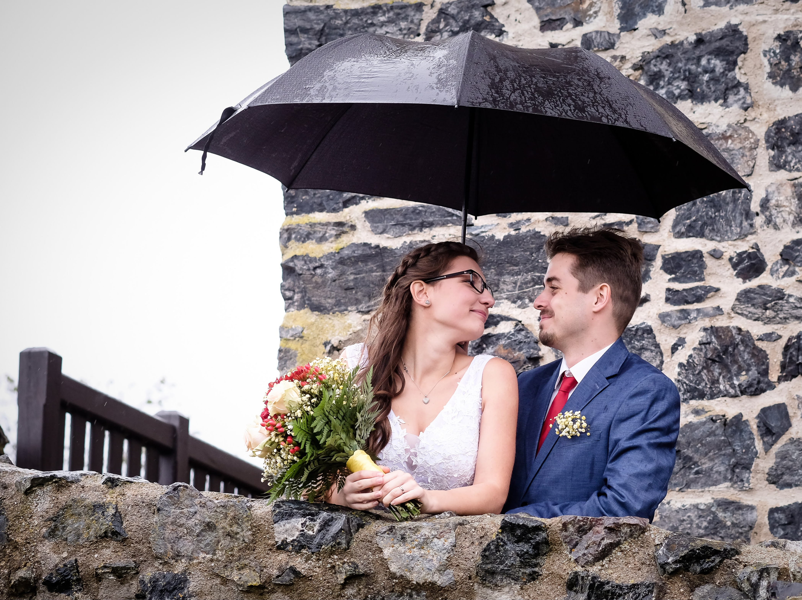
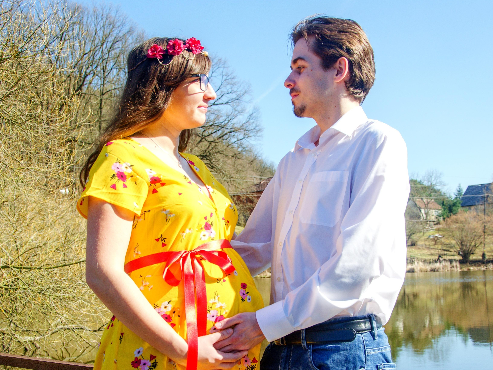

Klikni a začneme. Zabere to jen chviličku

Co kdybych mohl vrátit čas o 8 let zpět…
Vybral bych si stejnou cestu?

Poslední dobou myslím na holku, která mi vždy pomohla a bylo mi s ní dobře.
Co udělám?

Začne to být vážné…
Zůstanu?

Pak se stanou věci, které změní všechno.
Jaké to je?
Společně jsme to zvládli
Vzniklo to nejkrásnější, co jsme kdy dokázali.

Není to vždy jednoduché.
Ale…
Tak co… vybral bych si tenhle život znovu?
Já ano.
A vždycky bych si vybral tebe. Děkuju, že jsi moje žena a máma našich dětí. ❤️
Pokud nechceš audio, smaž assets/audio.mp3 a audio zůstane skryté.